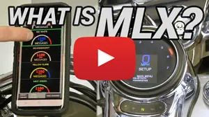

Technical Support Frequently Asked Questions Powersports
Technical Support Frequently Asked Questions Powersports
• General Motorcycle Instrument System FAQ's
• Motorcycle Speedometer FAQ's
• Motorcycle Add-Ons & Accessories FAQ's
• Gear Indicator FAQ's
• Oil Temp, PSI, Fuel, Etc. FAQ's
General Motorcycle Instrument Systems FAQ's
|
If I disconnect the battery will I lose all my settings? |
|
Will the MLX-8414 come with black bezels or use stock bezels? Our MLX-8414 will use the stock bezels that are already on the bike. If you want black bezels you would need to order the black CVO bezels directly from your local Harley Davidson dealership. |
|
How do I set my clock on my MLX gauges? Below you can check how to change the clock by using your trip switch.  |
|
How is visibility during the day and at night on my motorcycle? Night time visibility on all Dakota Digital gauges will be excellent. Daytime visibility will depend on the application. The MLX series of direct-plug in Harley Davidson instruments use high-visibility TFT displays and feature a high-contrast sunlight mode for great functionality even in direct sun. Most universal Dakota Digital motorcycle gauges use high contrast teal displays with non-glare lenses to improve daytime visibility. On bar mount systems and gauges mounted facing back toward the rider, visibility is good at all times. Dash mount systems that face straight up into the sun will have lesser visibility when the sun is high and shining directly on the gauge. It can still be read but visibility under these conditions is slightly reduced. |
|
Can I program my motorcycle’s current odometer reading on the Dakota Digital gauges or do I have to start at zero miles? Dakota Digital gauges come from the factory at zero miles. MLX and MVX series instruments allow for user programmable mileage to be set one (1) time during the initial setup before 100 miles. On all other gauges, Dakota Digital can set the odometer to a specific mileage reading. This must be done at the factory, there is a $20 charge (Plus return shipping) for this service. |
|
Will your MLX series show oil pressure on 2017 and newer bagger models? No, Harley Davidson changed to an oil switch on the 2017 and newer models. This provides a switch trigger, not a reading. |
|
What is the warranty of all the motorcycle products? All of our motorcycle products are covered for 24 months from the date of purchase. |
|
I'd like to utilize Bluetooth to configure my MLX Series, how is that done? It’s easy, take a look at the video below to see how this can be implemented on your Apple or Android product! |
Motorcycle Speedometer FAQ's
|
If I change my tire size, transmission or sprocket, can the speedometer still read properly? All Dakota Digital gauges can be calibrated by accessing the speed set-up menu and performing a calibration while riding. For many newer models, the speedometer is initially calibrated by the engine computer; although the speedometer reading can be adjusted through the gauge menu. |
|
How to change speed from MPH to km/h? A majority of our digital gauges can display MPH or km/h units by accessing the setup menu. The MLX Series can be selected either in the setup menu, or the Dakota Digital Bluetooth app. |
Motorcycle Add-Ons & Accessories FAQ's
|
I want to add air ride to my bike, is there a provision for your gauges to show that information without adding an external gauge? If you purchase a MBM-19 Air Pressure Module with one pressure sensor, that would give you the ability to show a rear or front air pressure in our gauges. If you purchase a second air pressure sensor, you can monitor both the front and rear air pressure readings. When using the MBM-19 with our MVX gauge kits the air pressure will show up in the message center; in our MLX version of gauges you can program one of the existing gauges to be air pressure gauge instead. |
|
I have a turbo on my bike and want to incorporate the boost reading into the set of gauges; can I do that without adding another gauge somewhere else? If you were to add the MBM-09 Boost Module with sensor to our MLX or MVX gauges, you will be able to see the boost pressure in the message center. |
|
My bike does not have direction or altimeter and I want to get rid of my temp gauge, do you have that ability in your gauges to show this? Yes, if you were to purchase the MBM-17 GPS Compass Module in conjunction with the MVX Series, the message center will display the compass reading, altimeter and temp reading. With the MLX Series, you can program one of the existing small gauges to display this information, or you can option to show this information within the message centers below the Speedometer or Tachometer. (updated video on You tube) |
Gear Indicator FAQ's
|
I have a Tri-Glide will your gauges show the gear shift accurately? Yes, we do have a setting for a tri-glide within the gauge set up menu. Once in the menu, you will find the GEAR SHIFT sub menu; and change to TRIKE set up. |
|
If I were to install a 7 speed transmission can your gauges show the 7th gear? Dakota Digital gauges which include a gear indicator are compatible with the 7th gear. Access the setup menu to start the gear positon calibration. When calibrating, it’s helpful to find a location with a long stretch of road and minimal stops. |
Oil Temp, PSI, Fuel, Etc. FAQ's
|
On a bagger application, where does the oil temp sensor get installed? The temp sensor will be installed into the front of the oil pan. In some cases, this replaces the drain plug. In other scenarios, this will thread into the pan, opposite of the drain plug. |
|
With this Dakota Digital direct-replacement, will I lose my fuel readout that the stock gauge has on my 2018+ Softail? No, with our new MLX-2011 you will still have a fuel gauge and miles to empty. Within the instructions, it will explain how to set the fuel sender to HD-2018 for proper compatibility. |
|
The fuel gauge on my MVX-8600 series is not reading accurately, how can I fix this? Some baggers between 2004 and 2007 require an upgraded OEM ground connection. The instruction manual discusses this new connection to be made to the fuel pump, rather than the OEM gauge harness. |
|
With the gauges that have to hardwired, what size of wire do you recommend? We would suggest an 18 gauge wire for any of our motorcycle gauge installations. |
|
I have an older bike with a cable driven speedo. Can I use your Speedometer? Dakota Digital gauges can be used on cable drive or electronic applications. Just be sure to order the appropriate speed adaptor for your application. Our gauges can be easily calibrated for any drive ratio, tire size or gearing! |
Not sure what fits?
Talk to a tech in Sioux Falls, Monday to Friday, 8am to 5pm Central.